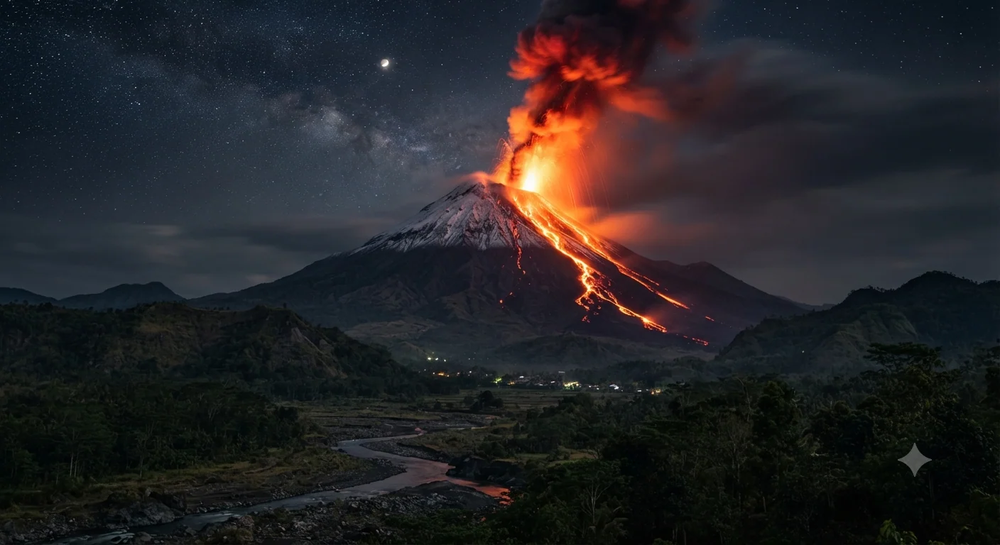

Romalılar onu Vulkan'ın demirhanesinin bacası olarak tanımladı. Yunanlılar Hephaestos'un örsü olarak hayal etti. Antik Mısırlılar volkanik patlamaları tanrıların öfkesi sandı. Oysa gerçek çok daha büyük ve çok daha işlevsel: Volkanlar, Dünya'nın iç ısısını yüzeye taşıyan basınç ventilleridir. Yeni kabuk üretir, verimli toprak yaratır, derin denizde güneş ışığı olmadan yaşamı besler ve zaman zaman iklimi yıllarca değiştirirler. Smithsonian Global Volcanism Program'ın 31 Mart 2026 tarihli güncel veritabanına göre şu an 41 volkan aktif patlama sürecindedir; 2025 yılı boyunca 63 farklı volkandan 71 onaylı patlama kaydedilmiştir.
Volkanlar Nasıl Oluştu? Gezegenin Erken Ateşi
Dünya yaklaşık 4,5 milyar yıl önce oluştuğunda, tüm gezegen eriyik haldeydi. Bu devasa magma okyanusunun soğuması ve katılaşmasıyla birlikte yoğun gazlar yüzeye çıktı; bunlar Dünya'nın ilk atmosferini ve okyanuslarını oluşturdu. Bu süreç, esasen gezegenimizin tarihindeki en büyük "volkanik faaliyet" dönemiydi.
Modern volkanizm üç ana mekanizma üzerine kurulur. İlki levha sınırlarındaki yitim bölgeleridir: Okyanus kabuğunu taşıyan bir tektonik levha, kıta kabuğunun altına dalarak eriyip magmaya dönüşür; bu magma yukarı çıkarak volkanı besler. Pasifik Ateş Çemberi'nin dik ve patlayıcı strato volkanları bu şekilde oluşur. İkincisi orta okyanus sırtlarıdır: İki levha birbirinden uzaklaştığında aradaki boşluğu doldurmaya çalışan magma yüzeye çıkar; bu en yoğun volkanik aktivite bölgesidir ve tüm Dünya volkanik enerjisinin dörtte üçü burada gerçekleşir. Üçüncüsü ise sıcak noktalar (hotspot)dır: Manto'dan yükselen kızgın plümler, üzerlerinden geçen tektonik levhaları delerek Hawaii, İzlanda veya Yellowstone gibi volkanik bölgeler oluşturur.
Woods Hole Oceanographic Institution'ın tanımıyla volkanlar, gezegenin periyodik olarak iç ısısını ve erimiş kayayı yüzeye taşıdığı "basınç ventilleridir." Bu süreç hem yıkıcı hem de yapıcıdır: Binlerce yılda birikmiş toprak verimliliğinin, okyanus tabanındaki dağ sıralarının ve kıta kabuğunun büyük bölümünün kaynağı volkanizmadır.
Kaç Tane Volkan Var? Güncel Smithsonian ve USGS Verileri
🌋 Dünya Volkan Sayıları — Smithsonian Global Volcanism Program, 31 Mart 2026
- Şu an aktif patlama halinde: 41 volkan
- 2026'da patlayan: 47 volkan
- 2025'te patlayan: 63 farklı volkan / 71 onaylı patlama
- 2010–2024 ortalaması: Yılda 35 yeni patlama
- Tarihsel kayıt içinde patlayan: 558 volkan
- 1800'den bu yana patlayan: 523 volkan
- Holosen'de (son 11.700 yıl) aktif: 854 volkan (kesin) + 1.215 (tahminî)
- Kara üzerindeki potansiyel aktif volkan: ~1.350 (USGS)
- Okyanus tabanındaki denizaltı volkanları: Tahminen 1 milyonun üzerinde
- Okyanus tabanı orta sırtlarını dışarıda bırakarak: ~1.500 aktif olarak değerlendirilen
USGS'nin resmi tanımına göre "aktif" olmak için bir volkanın son 11.700 yılda (Holosen çağında) patlama yaşamış olması yeterlidir. Bu nedenle "aktif" kavramı sanıldığından geniştir: Şu an püskürmeyen ama potansiyeli olan volkanlar "uyuyan" (dormant), artık hiç patlamaması beklenenler ise "sönmüş" (extinct) olarak sınıflandırılır.
Volkan Türleri
Strato volkan (bileşik volkan): Katmanlı lav ve piroklastik malzemeden oluşur; dik yamaçlı, patlayıcı yapıda. Fuji, Etna, Ararat bu türdendir. Kalkan volkan: Akışkan bazaltik lav üretir; geniş ve alçak profilli. Hawaii adaları örneğidir. Kaldera: Büyük bir patlamanın ardından volkan tepesinin çökmesiyle oluşan çukur. Türkiye'deki Nemrut Dağı ve Yellowstone bu kategoridedir. Maar: Magmanın yer altı suyuyla temasından kaynaklanan patlayıcı kraterler; Türkiye'nin Karapınar bölgesinde yaygındır.
Görünmeyen Volkanlar: Okyanus Tabanının Gizli Devcileri
Çoğu insan volkanlara dağ zirvelerinde tüten koniler olarak bakar. Oysa Oregon Eyalet Üniversitesi'nin Volcano World veri tabanına göre Pasifik Okyanusu tabanında her milyon km² başına yaklaşık 4.000 volkan bulunmaktadır; bu tahmin tüm okyanuslara genellendiğinde 1 milyonun üzerinde denizaltı volkanı ortaya çıkar. Bu volkanların yaklaşık 75.000'i okyanus tabanından 1 km'den fazla yükselmektedir.
NOAA'ya göre tüm Dünya volkanik aktivitesinin yüzde 75'i su altında gerçekleşir. Ama bu patlamaların büyük çoğunluğu okyanus yüzeyini dahi etkilemez: Üstlerindeki muazzam su kütlesinin yarattığı basınç, patlayıcı püskürmeleri bastırır ve lav pasif akıntılar hâlinde yayılır.
Haziran 2025 itibarıyla okyanusun yalnızca yüzde 27,3'ü modern standartlarda haritalanmıştır. Bilim insanları 2023'te uydu altimetri verisiyle okyanus tabanında 19.000'den fazla yeni "seamount" — yani denizaltı volkanik dağı — keşfettiklerini açıkladı. Scripps Institution of Oceanography'dan Julie Gevorgian liderliğindeki ekip, aynı tekniğin bunların on binlerce daha fazlasına işaret ettiğini vurguladı. Daha çarpıcısı: Mars ve Ay'ın yüzeyinin haritası tamamlanmış durumda, ama Dünya okyanusunun yüzde 70'ten fazlası hâlâ karanlıkta yatıyor.
National Geographic Science tarafından yayımlanan bir araştırmada, Sicilya Kanalı'nın kuzeybatısında altı yeni volkan bulunduğu duyuruldu. Bu volkanların kıyıya yalnızca birkaç km uzaklıkta, neredeyse "gözlerin önünde" gizlendiği görüldü. "Bazen nispeten az keşfedilmiş bir bölgeye baktığınızda ne bulacağınızı bile bilemezsiniz" diyor Western Washington Üniversitesi'nden Jackie Caplan-Auerbach. "Okyanusta keşfedilmeyi bekleyen büyük gizemler var."
Türkiye'de Volkanlar Var mı?
Evet — ve sayısı sanıldığından fazla. Türkiye, Avrasya, Afrika ve Arabistan tektonik levhalarının karmaşık çarpışma bölgesinde yer alıyor. Bu jeolojik dinamizm sonucunda ülke topraklarının yaklaşık yüzde 16'sı volkanik araziyle kaplıdır. Smithsonian Global Volcanism Program'ın Türkiye sayfasında 7 Holosen volkanı listelenmektedir; ancak Türkiye Jeoloji Mühendisleri Odası ve MTA (Maden Tetkik ve Arama Genel Müdürlüğü) verilerine göre toplam potansiyel aktif ve uyuyan volkan sayısı 10 ile 13 arasında değişmektedir.
🏳️ Türkiye'nin Başlıca Volkanları — Smithsonian GVP, KÜRE Ansiklopedisi, MTA 2025
| Volkan | Konum | Yükseklik | Durum | Son Patlama |
|---|---|---|---|---|
| Ağrı Dağı (Ararat) | Ağrı | 5.137 m | Uyuyan | 1840 |
| Nemrut Dağı | Bitlis / Van Gölü | 2.948 m | Uyuyan | 1692 |
| Tendürek Dağı | Ağrı güneyi | 3.584 m | Uyuyan | 1855 |
| Erciyes Dağı | Kayseri | 3.916 m | Uyuyan | MÖ ~6880 |
| Hasan Dağı | Aksaray / Niğde | 3.253 m | Uyuyan | MÖ ~6750–7550 |
| Süphan Dağı | Bitlis / Muş | 4.058 m | Uyuyan | Holosen |
| Kula Volkanik Alanı | Manisa (Ege) | ~855 m | Uyuyan / UNESCO Geopark | ~MÖ 13.000 |
| Karapınar (Konya) | Konya | — | Maar / uyuyan | Holosen |
| Karaca Dağı | Şanlıurfa / Diyarbakır | 1.957 m | Kalkan volkan / uyuyan | Holosen |
| Acıgöl–Nevşehir Kaldera | Nevşehir | — | Kaldera / uyuyan | Holosen |
Türkiye'nin volkanlarının tamamı şu an uyuyor; ama Türkiye Jeoloji Mühendisleri Odası uzmanları bu kavramın "sönmüş" ile karıştırılmaması gerektiğini vurguluyor. Prof. Dr. Ersoy'un aktardığına göre: "Türkiye'nin volkanları sönmüş değil; sadece uyuyor. Geçmişte pattılar, şu an kritik bir durum yok; ancak gözlem altında tutulmaları faydalı olur."
Nemrut Dağı özellikle dikkat çekici: Van Gölü'nün batısında, 9 x 5 km'lik bir kalderaya sahip bu volkan, dünyanın en büyük 16. kalderası ve Türkiye'nin en büyük kalderası konumunda. Yaklaşık 250.000 yıl önce gerçekleştirdiği büyük bir lav akıntısı, Van Havzası'nın su çıkışını kapayarak dünyanın en büyük alkali iç gölü olan Van Gölü'nü oluşturdu. Son bilinen patlaması 1692'dedir; 2003'te çevresine Türkiye'nin ilk gerçek zamanlı sismik sensör ağı kurulmuştur.
Hasan Dağı ise insanlık tarihindeki ilk volkan tasvirinin konusudur: MÖ ~7500'de bugünkü Çatalhöyük'te yaşayan insanlar, Hasan Dağı'nın patlamasını ev duvarlarına çizdiler. Bazı araştırmacılar bu resmin tarihin bilinen ilk manzara resmini oluşturduğunu savunmaktadır.
Kapadokya, Hasan Dağı ve çevresindeki volkanik aktivitenin yaklaşık 9 milyon yıl önce başlayıp binlerce yıl süren ardışık patlamaların ürünüdür. İgnimbrit ve piroklastik akıntı katmanlarının üzerine çöken ve ardından aşınan bu kayaçlar, peri bacalarını, yeraltı şehirlerini ve vadileri yarattı.
Dünyanın Öne Çıkan Aktif Volkanları
🌌 Dünyanın En Dikkat Çekici Aktif Volkanları
- Kilauea (Hawaii, ABD): Dünyanın en çok izlenen volkanlarından. Neredeyse sürekli aktif; USGS'ye göre "aktif ve patlıyor" statüsünde.
- Stromboli (İtalya): "Akdeniz'in Feneri" lakaplı; yaklaşık 2.000 yıldır aralıksız patlıyor. Akdeniz'de gemi rehberi işlevi görüyordu.
- Etna (Sicilya): Avrupa'nın en yüksek aktif volkanı (~3.357 m). 2025'te birden fazla parlama kaydedildi.
- Santorini (Yunanistan): 2025 başından itibaren sismik aktivite artışı nedeniyle izleme seviyesi yükseltildi.
- Campi Flegrei (İtalya): Napoli yakınındaki süper kaldera; 2024–2025'te zemin yükselmesi (bradisisma) devam ediyor.
- Popocatépetl (Meksika): 26 milyon kişilik Mexico City'nin yakınındaki aktif strato volkan.
- Axial Seamount (Oregon açıkları, sualtı): VolcanoDB 2026 verilerine göre orta-geç 2026'da patlama tahmin ediliyor; kaldera tabanı 10 cm şişmiş durumda.
- Hunga Tonga (Tonga, sualtı): Ocak 2022'de tarihin modern aletlerle ölçülen en büyük atmosferik patlamasını yarattı. Şok dalgası dünyayı 4 kez dolaştı.
- Yellowstone Kalderası (ABD): Süper volkan; son büyük patlaması ~640.000 yıl önce. Aktif ısı sistemi nedeniyle sürekli izleniyor.
Volkanlar Ekosistemde Ne İşe Yarar?
1. Dünya'nın En Verimli Toprakları Volkanik Kökenlidir
Woods Hole Oceanographic Institution'a göre volkanik kayaçların fiziksel parçalanması (ayrışma), Dünya'nın bazı en verimli topraklarını üretir. Japonya ve Endonezya'nın aktif volkanların gölgesindeki çeltik tarım arazileri bu sürecin canlı kanıtıdır. Roma ve Ege çevresindeki antik uygarlıklar da verimli volkanik topraklar üzerinde yeşerdi. Lav ve kül içindeki fosfor, potasyum, kalsiyum gibi mineraller zamanla toprağa karışarak son derece zengin bir büyüme ortamı oluşturur.
2. Yeni Kıta Kabuğu ve Kara Kütlesi Üretir
National Geographic Education'ın açıkladığı üzere, denizaltı volkanik patlamalardan çıkan lav soğuyarak sertleşir ve zamanla yükselen sualtı dağlar oluşturur. Bu dağlar yüzeye ulaştığında ada hâlini alır: Hawaii, İzlanda, Galápagos Adaları, Endonezya, Yeni Zelanda — tümü bu sürecin ürünüdür. Gezegenimizdeki tüm kara kütlelerinin kökeni, milyarlarca yıllık volkanik faaliyete dayanır.
3. Güneşsiz Derin Deniz Yaşamını Besler: Hidroternal Bacalar
1977'de Galápagos Sırtı'nda keşfedilen derin deniz hidroternal bakaları, biyoloji tarihinin en büyük sürprizlerinden birini sundu. National Geographic Education'a göre bu bacalarda fotosentez değil, kemosentez işliyor: Bakteriler volkanik kökenli hidrojen sülfidi enerjiye dönüştürüyor ve bu bakteriler; dev tüp solucanlar, istiridyeler, yengeçler ve yüzlerce başka türün besin zincirinin temelini oluşturuyor. Güneş ışığı olmadan çalışan bu ekosistemler, yaşamın gereksinimlerine ilişkin en temel varsayımlarımızı yeniden yazdı; aynı zamanda Mars veya Europa gibi buz altı okyanusa sahip gezegenlerde yaşam olabileceği hipotezine güçlü destek sağladı.
4. İklim Regülatörü: Hem Soğutur Hem Isıtır
Büyük volkanik patlamalar atmosfere sülfür dioksit (SO₂) fırlatır. Bu gaz stratosferde sülfat aerosollerine dönüşerek güneş ışınlarını kısmen yansıtır ve geçici bir soğuma etkisi yaratır. NASA Earthdata'nın aktardığına göre 15 Haziran 1991'deki Pinatubo patlaması yaklaşık 20 milyon ton SO₂ ve kül atmosfere gönderdi; bu küresel ortalama sıcaklıkları yaklaşık 0,5 °C düşürdü ve etkisi 1–3 yıl boyunca sürdü.
Öte yandan volkanlar uzun vadede CO₂ de salar. NASA'nın iklim sayfasına göre tüm dünyadaki volkanların birlikte saldığı CO₂ miktarı, insan faaliyetlerinin salımının yüzde birinden azdır. Ölçeği anlamak için: İnsan aktivitesi, her 2,5 saatte bir Mount St. Helens büyüklüğünde bir patlama kadar, her gün iki kez Pinatubo büyüklüğünde bir patlama kadar CO₂ üretiyor.
5. Mineral Döngüsü ve Okyanus Kimyası
Orta okyanus sırtlarındaki volkanik aktivite, gezegenin madde döngüsünde kritik bir işlev görür: Okyanus tabanına batan deniz tabanı malzemesi eriyerek üretilen yeni kabukla yer değiştirir; izler elementler ve mineraller bu süreçte yüzeye taşınır. Hidroternal bacalar demir, mangan, bakır ve çinko gibi metalleri okyanus suyuna karıştırarak deniz ekosistemlerinin beslenme döngüsüne katkıda bulunur.
Volkanlar İleride Artacak mı? İklim Değişikliği ve Volkanizma
Cambridge Üniversitesi ve İngiltere Met Office araştırmacılarının çalışmasına göre insan kaynaklı iklim değişikliği, volkanik püskürmeler ile atmosfer arasındaki etkileşimi köklü biçimde dönüştürecek. Büyük patlamaların plümleri, ısınan atmosferde daha yükseklere ulaşacak ve stratosfere daha fazla sülfat enjekte edecek; bu da onların soğutma etkisini artıracak. Ancak çok daha sık gerçekleşen küçük ve orta boy patlamaların soğutma etkisi yüzde 75'e kadar azalabilir.
Ayrıca buzul erimesi doğrudan volkanizmi etkileyebilir: Buz örtüsünün kaldırılması, altındaki kabuğun üzerindeki basıncı azaltır ve magmanın yüzeye çıkmasını kolaylaştırır. İzlanda, bu sürecin canlı gözlem alanı olarak bilim insanlarınca yakından takip ediliyor. Aralık 2025'te EBSCO Research'ün bir makalesinde, iklim değişikliğinin bazı tehlikeli volkanları uyandırabileceği ve büyük yıkıcı patlamaları daha sık hâle getirebileceği uyarısı yer aldı.
Smithsonian Global Volcanism Program veritabanının gösterdiği istatistik ise şu anda artış eğilimini doğrulamamaktadır: 2010–2024 arasındaki yıllık ortalama patlama sayısı 35 olarak sabit kalmıştır. Bu sayının gözlem teknolojilerindeki gelişmelerle (daha fazla volkanı takip edebilmek) artık görünür hâle gelmiş olabileceğini vurgulayan araştırmacılar, uzun dönem istatistiksel analizin kritik önem taşıdığını belirtiyor.
Pasifik Ateş Çemberi ve Dünyanın Volkanik Haritalandırması
Dünyadaki karasal volkanların büyük çoğunluğu Pasifik Ateş Çemberi üzerinde yoğunlaşmıştır. Bu halka, Japonya'dan Endonezya'ya, Yeni Zelanda'dan Şili'ye, Peru'dan ABD'nin Cascade Sıradağları'na uzanan ve dünyanın en aktif levha sınırlarını izleyen bir yay oluşturur. USGS'ye göre ABD'deki yaklaşık 170 potansiyel aktif volkanın büyük bölümü Cascade Sıradağları ve Alaska'da yer almaktadır; Hawaii ise kıtanın ortasındaki bir sıcak nokta üzerinde konumlanmıştır.
Avrupa'daki en aktif volkanik alan İtalya'dır. Eurasya ve Afrika levhalarının sınırında yer alan İtalya; aktif olan Etna (Avrupa'nın en yüksek aktif volkanı) ve Stromboli'nin yanı sıra uyuyan Vezüv ile Campi Flegrei kalderasına ev sahipliği yapar. İzlanda ise orta atlantik sırtının üzerinde yer aldığı için hem levha sınırı hem sıcak nokta dinamiğini aynı anda yaşayan eşsiz bir coğrafyadır.
📚 Bu Yazıda Başvurulan Kaynaklar
- Smithsonian Global Volcanism Program (31 Mar 2026). Volcanoes of the World v.5.3.5. volcano.si.edu
- USGS (2025). How many active volcanoes are there on Earth? usgs.gov
- USGS (2025). Active, dormant, and extinct: Clarifying confusing classifications. Yellowstone Volcano Observatory.
- NASA (Ekim 2024). What do volcanoes have to do with climate change? science.nasa.gov
- NASA Earthdata (2024). Volcanoes and Climate Change. earthdata.nasa.gov
- National Geographic Education (2025). Geology of the Deep; Deep Sea Hydrothermal Vents; Volcanoes. nationalgeographic.org
- National Geographic Science. Six underwater volcanoes found hiding in plain sight. Sicilian Channel bulguları.
- Woods Hole Oceanographic Institution. Underwater Volcanoes. whoi.edu
- Oregon State University, Volcano World (2025). Submarine Volcanoes. volcano.oregonstate.edu
- EcoPortal / EarthSky (Haziran 2025). 19,000+ undersea volcanoes mapped; ocean floor 27.3% charted as of June 2025.
- VolcanoDB (Mayıs 2026). Underwater Volcanoes: 114 Submarine Volcanoes Database. volcanodb.com
- EBSCO Research Starters (2025). Volcanoes: Climatic Effects. Aralık 2025 iklim uyarısı dahil.
- University of Cambridge / UK Met Office (2021, güncel 2025). Climate change modulates the stratospheric volcanic sulfate aerosol lifecycle. Nature Communications.
- KÜRE Ansiklopedisi (Haziran 2025). Active and Extinct Volcanoes of Türkiye. kureansiklopedi.com
- Smithsonian GVP (2026). Turkiye Volcanoes. volcano.si.edu
- Wikipedia (Mayıs 2026). Nemrut (volcano); List of volcanoes in Turkey.
- TürkiyeToday (Mart 2025). Unveiling Türkiye's volcanoes as global focus turns to Santorini's seismic activity.
- Volcanodiscovery.com (2025). Turkey volcanic eruption and activity data.
- National Geographic Education (2023). Deep Sea Hydrothermal Vents. — Chemosynthesis ve vent ekosistemleri.
Sonuç: Yıkım mı, Yaratım mı?
Volkanlar hakkındaki anlatı çoğunlukla yıkım üzerine kuruludur: Pompeii'yi gömen kül, Krakatau'nun yarattığı tsunami, Pinatubo'nun küresel soğutması. Oysa bu anlatı resmin yalnızca yarısını gösteriyor. Volkanlar olmadan Hawaii adaları var olmayacaktı, Japonya'nın çeltik tarlaları bu kadar verimli olmayacaktı, Kapadokya'nın peri bacaları asla şekillenmeyecekti, Van Gölü oluşmayacaktı ve güneş ışığı olmaksızın derinliklerde yaşayan tüm o eşsiz canlılar hiç evrimleşmeyecekti.
Dünyanın kabuğunu düzenli aralıklarla yenileyen, mineral döngüsünü sağlayan, okyanus tabanını şekillendiren ve gezegenimizin yaşam kapasitesini onlarca şekilde artıran bu basınç ventillerine bakmak için artık yalnızca tehlike değil, merak mercekleri takıyoruz. Çünkü en son veriler şunu açıkça söylüyor: Dünya'nın okyanuslarının yüzde 70'inden fazlası henüz keşfedilmedi ve o karanlıklarda, volkanik ateşin etrafında, insanlığın henüz adını bile bilmediği yaşam biçimleri varlığını sürdürüyor.